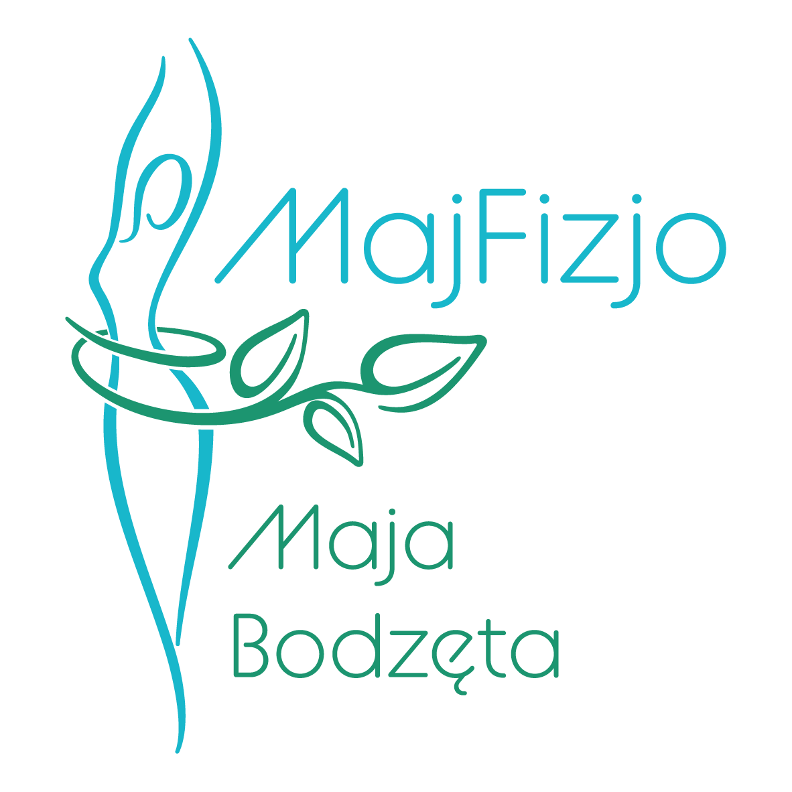
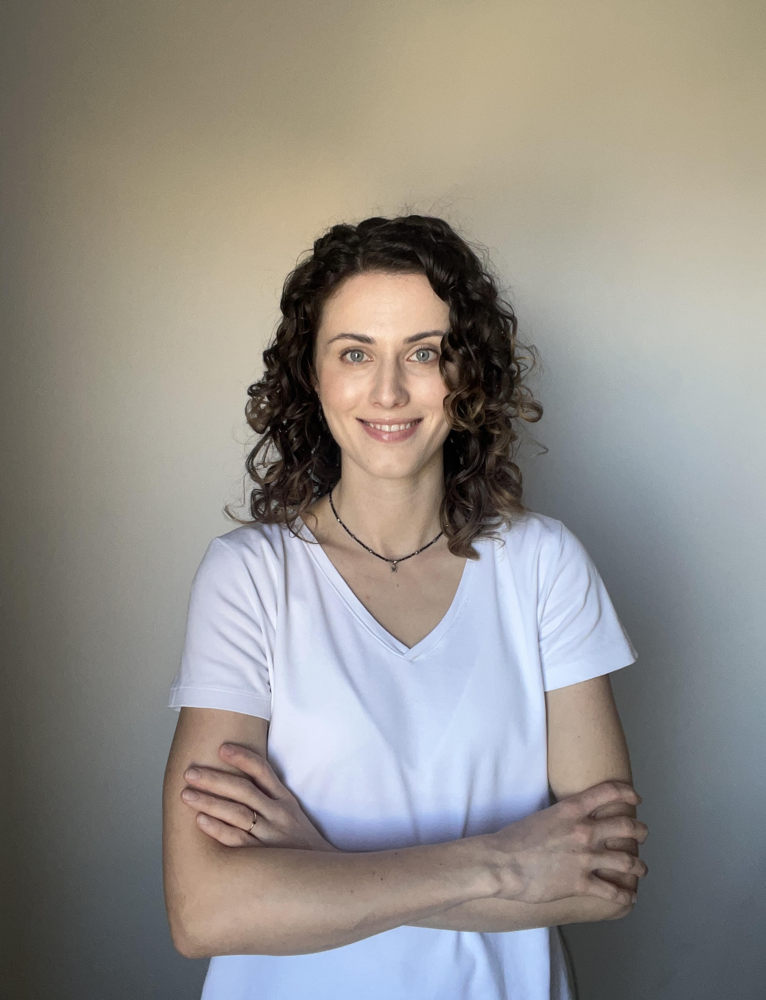

Jestem fizjoterapeutką, która pomaga wrócić do sprawności, pozbyć się bólu i poczuć się dobrze we własnym ciele.
Pracuję z osobami, które zmagają się z bólem kręgosłupa, napięciami oraz problemami narządu ruchu. Pomagam nie tylko zmniejszyć dolegliwości, ale też poprawić mobilność i komfort codziennego funkcjonowania.
Każdą terapię dopasowuję indywidualnie – łączę wiedzę medyczną, terapię manualną oraz elementy treningu, aby osiągnąć trwałe efekty.
Dbam również o regenerację i relaks. Wykonuję masaż Kobido, który rozluźnia napięcia, poprawia kondycję skóry i przywraca naturalną równowagę organizmu.
Pracuję także z bliznami, pomagając przywrócić ich elastyczność oraz zmniejszyć dyskomfort.
Moim celem jest kompleksowe wsparcie – tak, abyś mógł/mogła poruszać się bez bólu i czuć się swobodnie.
ból pleców, szyi, barków, kolan i innych stawów
powrót do sprawności po kontuzjach i operacjach
poprawa mobilności tkanek i estetyki blizn
ból głowy, karku, napięcia związane ze stresem
zapobieganie nawrotom bólu i utrzymanie sprawności
redukcja obrzęków, poprawa krążenia i regeneracja
poprawa sprawności, siły i powrót do aktywności
170 zł
150 zł
230 zł
150 zł
80 zł
120 zł
Pierwsza wizyta to dokładne zrozumienie problemu i rozpoczęcie skutecznej terapii.